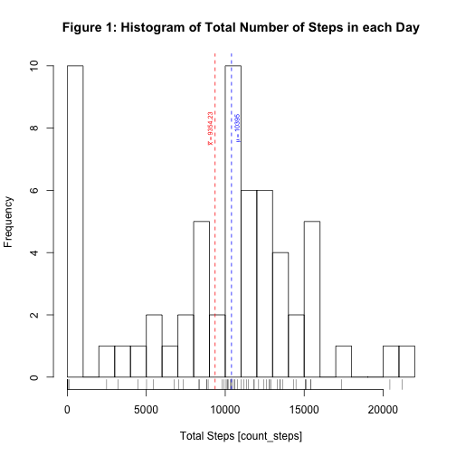
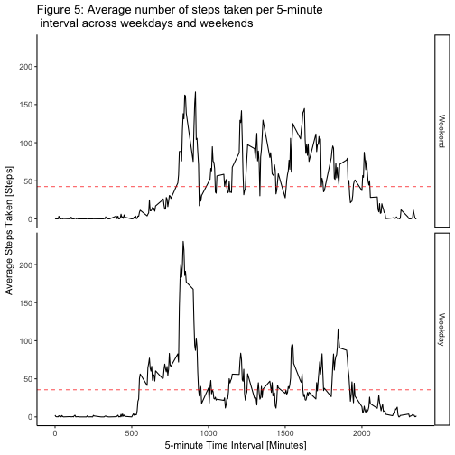

library(lubridate)
##
## Attaching package: 'lubridate'
## The following object is masked from 'package:base':
##
## date
library(ggplot2)
library(plyr);
##
## Attaching package: 'plyr'
## The following object is masked from 'package:lubridate':
##
## here
library(dplyr)
##
## Attaching package: 'dplyr'
## The following objects are masked from 'package:plyr':
##
## arrange, count, desc, failwith, id, mutate, rename, summarise,
## summarize
## The following objects are masked from 'package:lubridate':
##
## intersect, setdiff, union
## The following objects are masked from 'package:stats':
##
## filter, lag
## The following objects are masked from 'package:base':
##
## intersect, setdiff, setequal, union
Load raw data from activity.csv
activityRawSet <- read.csv("activity.csv",sep = ",", na.strings = "NA", stringsAsFactors = FALSE)
head(activityRawSet)
## steps date interval
## 1 NA 2012-10-01 0
## 2 NA 2012-10-01 5
## 3 NA 2012-10-01 10
## 4 NA 2012-10-01 15
## 5 NA 2012-10-01 20
## 6 NA 2012-10-01 25
Create a data frame from activityRawSet and mutate date column as date object
activitySet_df <- tbl_df(activityRawSet)
# add mutate date as date object
activitySet_df <- mutate(activitySet_df, date = as.Date(activitySet_df$date, "%Y-%m-%d") )
create data frame grouped by date and add count_steps variable including NA values.
# create df group by date
activity_steps_taken <- activitySet_df %>%
group_by(date) %>%
summarize(count_steps = sum(steps,na.rm=TRUE)
)
Part of data is shown as follow:
# show data
activity_steps_taken
## # A tibble: 61 x 2
## date count_steps
## <date> <int>
## 1 2012-10-01 0
## 2 2012-10-02 126
## 3 2012-10-03 11352
## 4 2012-10-04 12116
## 5 2012-10-05 13294
## 6 2012-10-06 15420
## 7 2012-10-07 11015
## 8 2012-10-08 0
## 9 2012-10-09 12811
## 10 2012-10-10 9900
## # ... with 51 more rows
The mean and median of total steps taken per day were calculated, using mean() and median() functions with activity_steps_taken$count_steps as parameter including observations with NA values.
activity_mean <- mean(activity_steps_taken$count_steps)
activity_median <- median(activity_steps_taken$count_steps)
The mean total number of steps taken per day is: 9354.23** and the median total number of steps taken per day is: **10395.
Figure 1, shows the histogram of the total number of steps taken each day including its total mean and median values represented by red and blue doted lines respectively.
# Generate histogram
hist(activity_steps_taken$count_steps, breaks=25, main="Figure 1: Histogram of Total Number of Steps in each Day", xlab="Total Steps [count_steps]")
rug(activity_steps_taken$count_steps)
abline(v = activity_mean, col = "red", lwd = 1, lty = 2)
abline(v = activity_median, col = "blue", lwd = 1, lty = 2)
text(activity_mean-0.3e3, 8, bquote(bar(x) == .(activity_mean)), col = "red", srt = 90,cex=0.6)
text(activity_median+0.4e3, 8, bquote(mu == .(activity_median)), col = "blue", srt = 90,cex=0.6)

Grouped dataset by time interval to obtain the total number and average number of steps taken per interval, averaged across all days.
# Avg number of steps grouped by interval
# create count_steps and avg_steps variables
# include NA values
activity_time <- activitySet_df %>%
group_by(interval) %>%
summarize(count_steps = sum(steps,na.rm=TRUE),
avg_steps = mean(steps,na.rm=TRUE)
)
Portion of activity_time dataset
## # A tibble: 288 x 3
## interval count_steps avg_steps
## <int> <int> <dbl>
## 1 0 91 1.7169811
## 2 5 18 0.3396226
## 3 10 7 0.1320755
## 4 15 8 0.1509434
## 5 20 4 0.0754717
## 6 25 111 2.0943396
## 7 30 28 0.5283019
## 8 35 46 0.8679245
## 9 40 0 0.0000000
## 10 45 78 1.4716981
## # ... with 278 more rows
The summary of activity_time$avg_steps shows on average the maximum number of steps in the column (Max.)
## Min. 1st Qu. Median Mean 3rd Qu. Max.
## 0.000 2.486 34.110 37.380 52.830 206.200
The 5-minute interval that on average, contains the maximum number of steps is calculated as follow:
# Get the index value from the max avg_steps value of activity_time dataset
# set result to max_interval object
max_interval<-activity_time[which.max(activity_time$avg_steps), ]
max_interval
## # A tibble: 1 x 3
## interval count_steps avg_steps
## <int> <int> <dbl>
## 1 835 10927 206.1698
Across all the days in the dataset, the 5-minute interval of 835** minutes , with a total of **10927** steps, on average contains a maximum of **206.17 steps.
Figure 2, shows the time series plot of the average number of steps taken, including the 5-minute interval that on average, contains the maximum number of steps (Doted red vertical line).
g2 <- ggplot(activity_time, aes(interval, avg_steps))
g2 + geom_line() + ggtitle("Figure 2. Time series plot of the average number of steps taken") +
# Label axis
xlab("5 Interval (minutes)") + ylab("Avg. Activity (steps)") +
# Add doted lines
geom_vline(aes(xintercept=max_interval$interval), color="red", linetype="dashed", size=1/3) +
geom_hline(aes(yintercept=max_interval$avg_steps), color="red", linetype="dashed", size=1/3) +
# Add label to doted lines
geom_text(aes(x=550, label=paste(" Max. Steps =", round(max_interval$avg_steps, digits=2), sep=" "), y=max_interval$avg_steps-0.1e2), colour="red", size=3) +
geom_text(aes(x=max_interval$interval+0.3e2, label=paste(" 5 min Interval =", round(max_interval$interval, digits=2), sep=" "), y=100), colour="red", angle=90, size=3) + theme_classic()
Note that there are a number of days/intervals where there are missing values (coded as ùôΩùô∞). The presence of missing days may introduce bias into some calculations or summaries of the data. The total number of observations containing missing values are calculated as follow.
activity_count_na_values <- sum(is.na(activityRawSet$steps))
The total number of observations containing missing values in steps variable is 2304
The strategy for filling in all of the missing values in the dataset is replacing NA values with the mean of 5-minute time interval and create a new dataset activity_fill_na that is equal to the original dataset activitySet_df but with the missing data filled in.
# Group activitySet_df by interval
# Replace NA values in steps variable with the mean() by interval
activity_fill_na <- activitySet_df %>%
group_by(interval) %>%
mutate(steps= ifelse(is.na(steps), mean(steps, na.rm=TRUE), steps))
Check activity_fill_na dataset with 0 NA values
## steps date interval
## 0 0 0
Portion of activity_fill_na dataset after imputing NA values
## Source: local data frame [17,568 x 3]
## Groups: interval [288]
##
## # A tibble: 17,568 x 3
## steps date interval
## <dbl> <date> <int>
## 1 1.7169811 2012-10-01 0
## 2 0.3396226 2012-10-01 5
## 3 0.1320755 2012-10-01 10
## 4 0.1509434 2012-10-01 15
## 5 0.0754717 2012-10-01 20
## 6 2.0943396 2012-10-01 25
## 7 0.5283019 2012-10-01 30
## 8 0.8679245 2012-10-01 35
## 9 0.0000000 2012-10-01 40
## 10 1.4716981 2012-10-01 45
## # ... with 17,558 more rows
Summary to compare activity_steps_taken_im dataset with imputed missing values and the original dataset activity_steps_taken
## Min. 1st Qu. Median Mean 3rd Qu. Max.
## 0 6778 10400 9354 12810 21190
## Min. 1st Qu. Median Mean 3rd Qu. Max.
## 41 9819 10770 10770 12810 21190
Figure 3, Shows Histogram of the total number of steps taken each day after missing values are imputed including its total mean and median values represented by red and blue doted lines respectively. In this case after imputed 2304** missing values generates a slight increase in the values of the average and the median (compares original dataset with NA values) which causes both values, the mean and the median to be equals **10776.19.
# Generate histogram
hist(activity_steps_taken_im$count_steps, breaks=25, main="Figure 3: Histogram of Total Number of Steps in each Day \n With Imputing Missing Values", xlab="Total Steps [count_steps]")
rug(activity_steps_taken_im$count_steps)
abline(v = activity_mean_imp, col = "red", lwd = 1, lty = 2)
abline(v = activity_median_imp, col = "blue", lwd = 1, lty = 2)
text(activity_mean_imp-0.3e3, 8, bquote(bar(x) == .(activity_mean_imp)), col = "red", srt = 90,cex=0.6)
text(activity_median_imp+0.5e3, 8, bquote(mu == .(activity_median_imp)), col = "blue", srt = 90,cex=0.6)

Figure 4, Shows two histograms to compare the total number of steps taken each day, the first one shows the distribution before imputing and the second one shows the distribution after imputing missing values.
#Generate Histograms
par(mfrow = c(2, 1), oma = c(2, 2, 2, 2) , mar = c(2, 2, 2, 2))
# Generate histogram without imputing values (Original)
hist(activity_steps_taken$count_steps, breaks=25, main="Dataset Before Imputing Missing Values", xlab="Total Steps [count_steps]")
rug(activity_steps_taken$count_steps)
abline(v = activity_mean, col = "red", lwd = 1, lty = 2)
abline(v = activity_median, col = "blue", lwd = 1, lty = 2)
text(activity_mean-0.3e3, 8, bquote(bar(x) == .(activity_mean)), col = "red", srt = 90,cex=0.6)
text(activity_median+0.4e3, 8, bquote(mu == .(activity_median)), col = "blue", srt = 90,cex=0.6)
# Generate histogram with imputing values
hist(activity_steps_taken_im$count_steps, breaks=25, main="Dataset After Imputing Missing Values", xlab="Total Steps [count_steps]")
rug(activity_steps_taken_im$count_steps)
abline(v = activity_mean_imp, col = "red", lwd = 1, lty = 2)
abline(v = activity_median_imp, col = "blue", lwd = 1, lty = 2)
text(activity_mean_imp-0.3e3, 8, bquote(bar(x) == .(activity_mean_imp)), col = "red", srt = 90,cex=0.6)
text(activity_median_imp+0.4e3, 8, bquote(mu == .(activity_median_imp)), col = "blue", srt = 90,cex=0.6)
title("Figure 4: Histogram of Total Number of Steps in each Day ", outer=TRUE)

The summary of mean and median by group (weekends and weekdays) is as follow:
## day_type activity_mean
## 1 Weekend 42.36640
## 2 Weekday 35.61058
## day_type activity_median
## 1 Weekend 32.33962
## 2 Weekday 25.80314
Figure 5, Shows Panel plot comparing the average number of steps taken per 5-minute interval across weekdays and weekends including the mean for every group.
The number of steps taken per 5-minute shows that on average, there is more activity on weekends (42.37 Steps) than weekdays (35.61 Steps).
Activity during weekdays starts much earlier than on weekends. On weekdays the activity take place between 8:30 and 9:30 in the morning surpassing its own average during this period and although during the weekends begins activity around 8.30 only it is observed that it surpasses its own average around the 09:30
